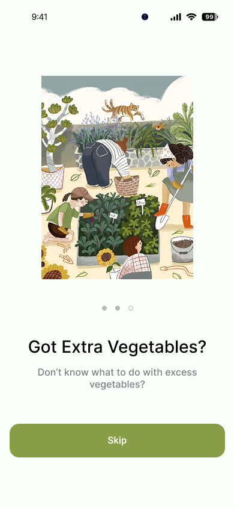
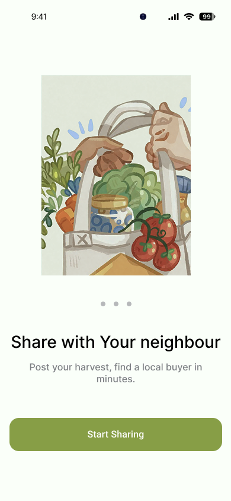

A hyper-local platform that connects home growers with nearby buyers — because fresh food was already being shared informally. It just needed a home.


India generates over 70 million tonnes of food waste annually. A significant portion of that waste happens at home — not in factories or restaurants. Balcony gardeners, kitchen farmers, and hobby growers regularly produce more than they can eat, but they have no simple way to share it with the people five minutes away.
At the same time, urban India is developing a growing appetite for fresh, chemical-free produce in small quantities. People don't want to buy 5 kgs of tomatoes from a supermarket. They want 200 grams of something they can trust, from someone nearby.
The exchange already happens — on WhatsApp, through word of mouth, over compound walls. Go Farming isn't inventing a behaviour. It's giving an existing behaviour a structure, a trust layer, and a home.
I started by talking to people — 5 home growers and 3 buyers in Guwahati and Bengaluru. The same story came up again and again.
"I had 2 kg of tomatoes last month, and half of it spoiled. I wished there was a way to share or sell it to my neighbours."
— Interview participant, home grower, GuwahatiGrowers were giving produce away informally or letting it rot. Buyers were paying more for worse produce at bulk markets. And the platforms that could connect them — OLX, WhatsApp, even grocery delivery apps — weren't built for this. Bulk focus. No location filter for produce. No way to post a listing that says "I have 300g of fresh coriander, ready now, 1.5km from you."
The gap wasn't awareness. It wasn't motivation. It was friction, trust, and structure — and those are design problems.
Research gave me a clear picture of what mattered most: proximity, trust, and the ability to negotiate. The design had to serve both a 40-year-old housewife posting her balcony harvest and a 30-year-old professional browsing on his commute.

Proximity isn't a filter. It's the entire value proposition. The home screen leads with your current neighbourhood — every listing card shows the exact distance. The location picker goes State → City → Neighbourhood so it works for both urban and smaller-town users. If you're in Beltola, Guwahati, you see Beltola first.
Categories like Staples, Fruits, Fish, Dairy, Homemade Products, and Flowers reflect the real variety of what home growers produce — not a supermarket aisle. The "Buy Again" section creates repeat purchase behaviour. "Explore" surfaces discovery. Both buyers and sellers benefit from being shown, not just searched for.
First-time buyers won't purchase from a stranger without some proof of credibility. Go Farming builds this in layers: a Government ID verification unlocks a visible "Verified" badge that appears on every listing and profile. Star ratings are collected post-transaction. Seller profiles show past listings, follower count, and location context. Trust isn't a modal — it's woven into every touchpoint.

Every trade generates activity — offer requests, counter-offers, acceptances, rejections. Grouping notifications by date and making them searchable means neither side is left wondering what happened. The notification centre turns casual browsing into active commerce.

Most of the interesting design work wasn't in building the screens — it was in figuring out the right model before touching Figma. These were the decisions that took the most time.


Go Farming is a small app solving a very local problem. But the model — hyper-local, trust-layered, conversation-based community commerce — has implications that stretch beyond one city or one vegetable.
Starting from an existing informal behaviour — WhatsApp vegetable swaps — meant the product had a real user base before a single screen was designed. The research didn't create the insight; it confirmed something that was already happening and helped me design with it, not against it.
The decision to put negotiation inside chat rather than building a checkout flow was the right one. It made the product feel like a community tool, not a marketplace. That distinction matters enormously for first-time user trust.
I assumed the offer chip denominations (₹600, ₹450, ₹400...) based on interview data from Guwahati. But price ranges vary significantly by city and product type — persimmons in Bengaluru and tomatoes in Guwahati are completely different conversations. I'd run specific usability testing on the offer flow in multiple cities before shipping.
I'd also test the listing flow with non-tech-savvy users earlier. Watching a first-time user navigate the Info → Upload tab split would tell me far more than I can guess from research alone.
Three features I believe would make this product genuinely indispensable: a Growth Tracker (a plant diary that predicts harvest windows and auto-drafts listings), Community Recipes (connect surplus produce to what to cook with it), and Delivery Coordination (a lightweight map-based pickup scheduler to remove the final friction from every trade).